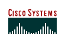

A Nützmann Networks
é uma empresa independente e sem vínculos de exclusividade com fornecedores
específicos.
Devido à nossa presença e experiência
na área desde 1996, estreitamos relações com algumas empresas
que oferecem alta qualidade em seus produtos e serviços.
Isso
nos proporciona possibilidade de acesso a melhores negócios e parcerias
com empresas de renome no mercado.
Apesar disso, não limitamos
o oferecimento de soluções às empresas com que mantemos relações
mais próximas.
Levamos em consideração e trabalhamos
com todo o mercado que disponha de soluções para as necessidades
expostas por nossos clientes, almejando a excelência e a satisfação
por completo com a solução oferecida.
A decisão
é feita em conjunto pela solução que melhor se adequa às
necessidades e realidade de cada situação.
Durante
todo o perído de contratação é mantida completa transparência
em todas as etapas, principalmente na seleção de fornecedores, sendo
que nossos clientes têm total controle sobre tudo pertinente ao seu projeto.

Página
Principal
I Sh0t the Sheriff - Podcast de segurança da informação.
RavenTek Tecnologia - Especializada em desenvolvimento de web applications e multimídia (web, artes gráficas, interatividade, programação, banco
de dados).
Penso Internet e Segurança
de Dados - Oferece solução integrada desenvolvida para pequenas
e médias empresas, visando eliminar os problemas inerentes às tarefas
de instalação, operação, suporte e manutenção
de estruturas de informática.
HighCast Informática - Empresa prestadora de serviços profissionais em tecnologias de rede,
é composta por experiente time de tecnologia, o mesmo que levou a empresa
MultiRede ao sucesso. É responsável por grande parte dos serviços
profissionais oferecidos por empresas como Juniper e F5 a seus clientes.
 Cisco
Systems - Líder mundial no fornecimento de soluções
de conectividade, compõe a maioria dos roteadores instalados no mundo,
e oferece soluções em quase todas as áreas de comunicações
como voz, vídeo, dados, segurança, gerenciamento, tarifação,
redes locais, remotas e sem fio.
Enterasys Networks - Fabricante norte-americana de switches e roteadores com segurança integrada, além de dispositivos de segurança como IDS, IPS, NAC e Security Information Management. Herdou o legado da empresa Cabletron Systems, e atua entre os
líderes do mercado desde 1991, possuíndo uma linha de produtos para
redes de excepcional qualidade tecnológica.
IronPort Systems - Adquirida pela Cisco em 2007 e operando como subsidiária independente, a IronPort fabrica o mais poderoso sistema de proteção de e-mail existente. Sua tecnologia ultra-rápida é conhecida por ter o menor índice de falsos-positivo em relação ao maior índice de bloqueio de mensagens indesejadas e ataques de worms, vírus e malware. Sua tecnologia é também aplicada em filtros de conteúdo para a web e para e-mail.
f5 Networks - Fabricante de Application Delivery Switches, dispõe de uma das melhores soluções do mercado para balanceamento de carga, distribuição de tráfego e disponibilidade de dados e aplicativos.
Lan Professional - Importadora e distribuidora oficial no Brasil dos produtos Enterasys, D-Link,
F5, IronPort, PowerWare, e outros. É centro de treinamento certificado
da Enterasys e da D-Link.
Hospedado.biz - Fornece
pacotes de hospedagem personalizados, e hospeda a Nützmann.net.
n3tworkz.com - Referências
para o profissional de redes, hospeda links e listas de discussão voltadas
à engenharia e ao suporte de sistemas de comunicação.
Página
Principal |